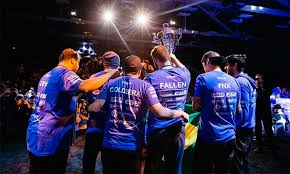

Início de sua Carreira
FalleN começou seu caminho no Counter-Strike 1.6 aos 12 anos, quando se juntou ao time da Soldiers of Fire. Em 2005, o awper teve seu primeiro destaque nacional jogando pela Crashers, ao disputar as qualificatórias da World Cyber Games (WCG) de 2005 a 2008. Mas foi pela FireGamers que a chance veio em 2009. Ao lado de Lincoln “fnx” Lau, Bruno Ono, Renato “nak” Nakano e Arthur “prd” Resende, FalleN finalmente alcançou o cenário mundial na WCG 2009, 2010 e 2011 além da cobiçada ESWC, também em 2010 e 2011.
Começo no Counter-Strike: Global Offensive
Com a chegada do cenário competitivo de Global Offensive em 2013, FalleN, entre diversos atletas, se afastaram do cenário internacional e precisaram se readaptar à nova versão do jogo. Foi apenas em 2014 que o jogador conseguiu se reestabelecer como um dos grandes nomes do cenário, depois da ProGaming.TD, então time do atleta, se juntar à KaBuM! e-Sports.
Com o antigo companheiro fnx e as adições de Fernando “fer” Alvarenga e os gêmeos Lucas “Lucas1” Teles e Henrique “Hen1” Teles, FalleN voltava a ter um grande time para encarar as principais competições, como a ESWC em 2014. Mas a má atuação da equipe no torneio provocou uma mudança no elenco. As saídas de fnx, Lucas1 e Hen1 deram espaço para as chegadas de Lucas “steel” Lopes, Caio “zqk” Fonseca e Ricardo “boltz” Prass, e os resultados não tardariam a vir.
O primeiro Major
A proximidade da ESL One: Katowice em 2015 trouxe um novo desafio para FalleN: voltar aos mundiais sob a bandeira da KaBuM. E o convite para o qualificatório presencial era a esperança do capitão de chegar novamente ao topo do cenário internacional. No entanto, a organização não dispunha do dinheiro para enviar o time para buscar a vaga. Através de doações da comunidade e a colaboração do sueco Robin “flusha” Rönnquist, jogador da Fnatic, a equipe conseguiu viajar para o qualificatório, onde garantiram a vaga para o mundial.
Com a contratação do time pela Keyd Stars, FalleN, fer, steel, Boltz e zqk surpreenderam a Polônia e o cenário competitivo de Counter-Strike, se tornando o segundo time na história do CS:GO a conquistar o status de legends em sua estreia em Majors.
O bom resultado levou os brasileiros para a Luminosity Gaming (LG), organização americana que trazia mais infraestrutura e um espaço fixo no cenário internacional para o elenco. Depois de mudanças na equipe, com o retorno de fnx e a chegada de Epitácio “TACO” de Melo, Marcelo “coldzera” David e o coach Wilton “zews” Prado, a LG chegava para o MLG Major Columbus com bastante respeito, com três vices-campeonatos importantes, a FACEIT 2015 Stage 3, a DreamHack Open Leipzig e a Intel Extreme Masters X. Mas a grande surpresa chegou exatamente no mais importante campeonato de Counter-Strike. No dia 3 de abril de 2016, vencendo a Natus Vincere por 2 a 0, e a Luminosity Gaming conquistou o mundial de CS:GO pela primeira vez na história do cenário brasileiro.
Número 1 do mundo e o segundo Major
Com o título do MLG Major Columbus e os constantes bons resultados, como o título da ESL Pro League Season 3, a Luminosity Gaming chegou à primeira posição do ranking mundial da HLTV em 9 de maio de 2016. A preparação para a ESL One: Cologne 2016, o Major seguinte, não seria longa, com o torneio começando no dia 5 de julho. Mas antes da tentativa de manutenção do título mundial, a primeira edição da ELEAGUE marcaria uma grande mudança na vida de FalleN e os companheiros. Depois de atropelar o grupo na primeira fase da competição, os brasileiros foram eliminados do torneio, com o anúncio de que estariam deixando a Luminosity Gaming e acertando com a alemã SK Gaming, uma das mais tradicionais equipes da história dos esports.
A chegada da ESL One: Cologne impunha um novo desafio para FalleN. Manter a equipe no topo do mundo mesmo sem o fator surpresa. E o resultado foi muito maior que o esperado. Com apenas um mapa perdido em toda a competição, no histórico jogo da semifinal contra a Virtus.Pro, batendo a Team Liquid, a SK Gaming conquistava seu primeiro título mundial no Counter-Strike: Global Offensive, e os brasileiros chegavam ao topo pela segunda vez consecutiva.

Bicampeão mundial: as dificuldades
O domínio da equipe liderada por FalleN foi bastante intenso pelos meses que se seguiram à ESL One: Cologne. A line up passou um total de 10 meses chegando pelo menos às semifinais em todos os eventos que disputou. A boa fase teria uma breve pausa, com a saída de fnx da equipe. O AWPer e IGL gerenciou bem a equipe no ELEAGUE Major Atlanta, caindo apenas no top 4, mesmo usando um substituto, o português Ricardo “fox” Pacheco para completar o time.
A boa fase parecia voltar, com a chegada de João “felps” Vasconcellos e os seis títulos em dez campeonatos disputados até o PGL Major Kraków, incluindo a ESL One: Cologne 2017. No entanto, o resultado no Major, com a equipe caindo nas quartas-de-final, depois de uma atuação ruim de FalleN contra a Astralis, deflagrou novos problemas chegando para o time. O mais novo membro da equipe, felps, deixaria o time para o retorno de boltz, que também não poderia jogar o ELEAGUE Major Boston por já ter participado dos Minors do torneio pela Immortals.
Em 2018, Fallen foi contratado para line up da MIBR, que até então, era considerada a melhor do mundo. Depois de um longo período de inconsistência da equipe e várias trocas no elenco, Fallen pediu para ser retirado do time titular da MIBR, no dia 13 de setembro de 2020, após a organização afastar seus companheiros Epitácio "TACO" de Melo, Fernando "fer" Alvarenga e o técnico Ricardo "dead" Sinigaglia.do mundo.